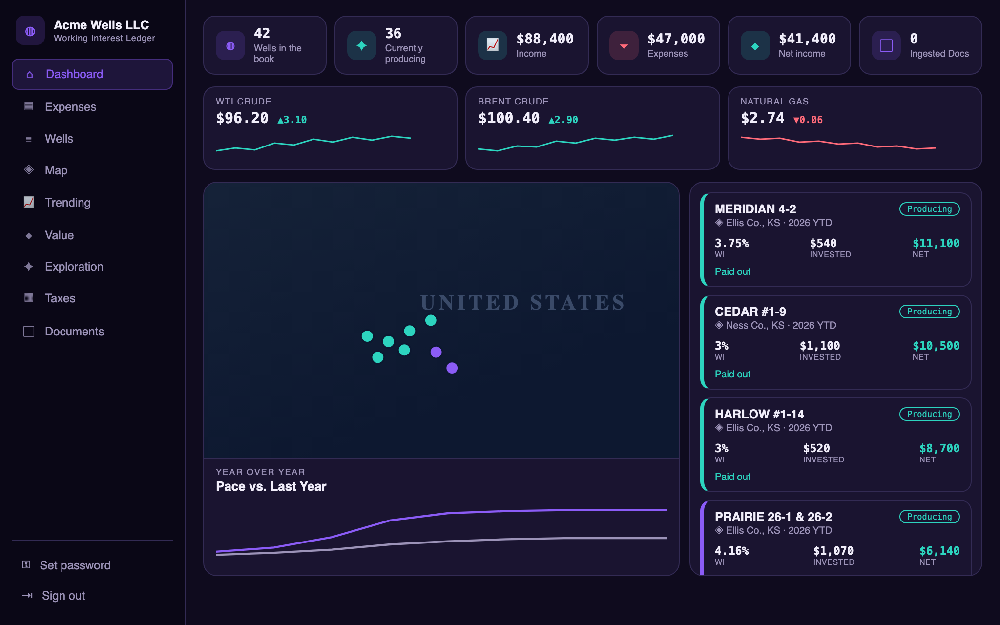
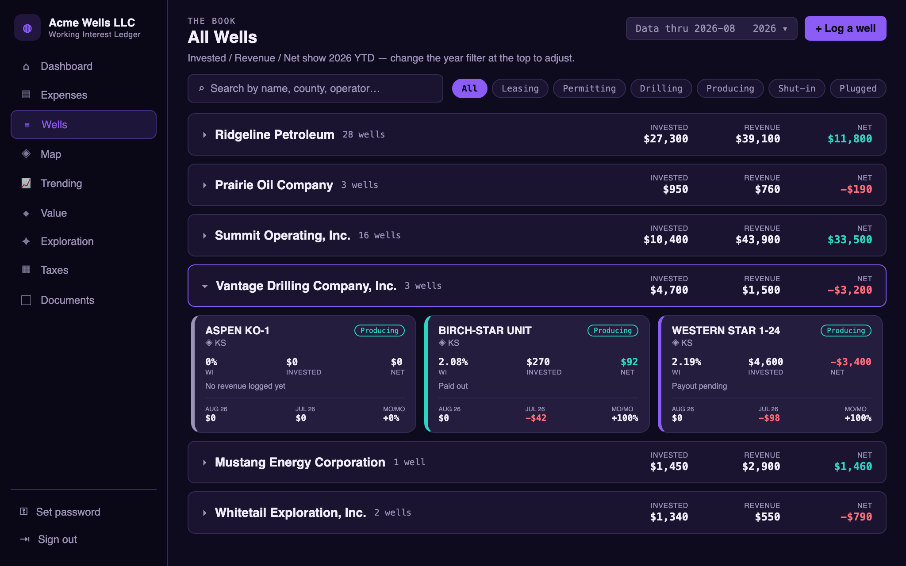
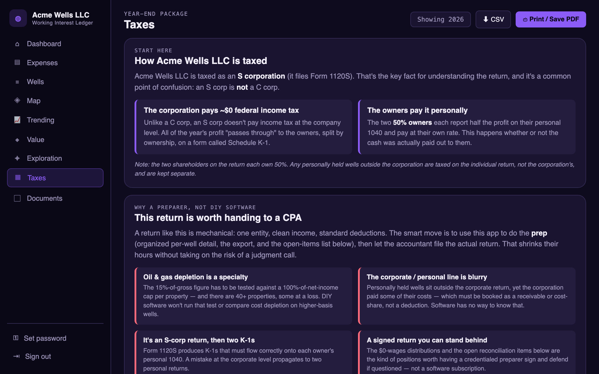

I turn business requirements into working software — defining the vision, directing AI-assisted development to build it in Python and modern web tech, and testing and debugging until it ships. Backed by 28+ years in mission-critical operations.
My strength is ownership end to end. I take a business problem, define the vision and requirements, direct AI-assisted development (Kiro) to build the solution in Python and modern web tech, and stay with it through testing and debugging until it's a working, deployed result. Before this I spent 28+ years running mission-critical SMS/MMS network platforms at Sprint and T-Mobile, so I understand the systems software serves and I know when the output is right. I also own an oil & gas business, for which I built and run a full-stack management app.
The problem. Working-interest oil & gas income arrives as a mess of operator statements, checks, and bank activity. I needed one place to see what I'd invested in each well, what had come back, whether it had paid out, and what it all meant at tax time.
What I built. A full-stack web app: dashboard with company-wide totals and a cash-flow timeline, per-well tracking, Python scripts that ingest operator PDF statements, bank-statement reconciliation, document management, and tax reporting — all behind magic-link auth with row-level security. Deployed to production on Vercel + Supabase.



The public repo is a sanitized copy with sample data. It includes the steering docs and decision logs — a direct look at how I direct AI and make design calls.
◆ View the code on GitHubSpec-driven builds, requirements definition, directing AI coding agents (Kiro), iterative testing & debugging to a working result.
Turning a business need into a clear end-goal, scoping, seeing it through to delivery, and verifying the output against real-world requirements.
React, Supabase (Postgres), Python data ingestion, Vercel deployment, SQL & Oracle, HTML/CSS, Git/GitHub.
28+ years mission-critical support, managing 300+ Linux & Windows servers, virtual servers, Linux/CLI, log analysis at scale, IMS Core.
Start with the Standard version — it's clean and ATS-friendly. Alternate designs below have the same content.
📄 Download Résumé (Standard PDF)Also available in other styles